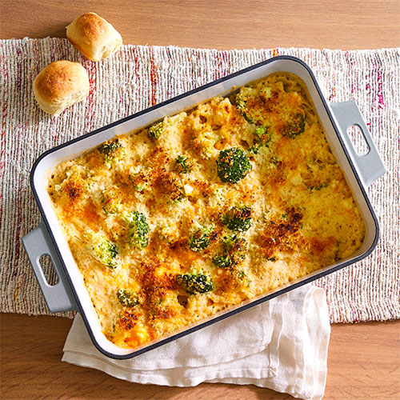

Description
A yummy Indian inspired, creamy, chicken broccoli and cheese dish!
Ingredients
- Boneless chicken tenderloins
- 2 cans of cream of mushroom or broccoli soup
- 1 bag frozen broccoli
- 1 bag shredded cheddar cheese
- 1 cup white rice
- Cumin
Steps
- Boil chicken breast tenderloins
- Chop chicken breasts into bite size pieces
-
Empty 2 cans of cream of mushroom/broccoli soup into a mixing
bowl
-
Mix the chicken into the bowl of cream of mushroom/broccoli soup
- Shake cumin on top and mix well, more for spicier result
-
Scoop chicken, cream, cheese and cumin mixture into a casserole
dish
- Microwave the bag of broccoli
- Mix the broccoli into the casserole dish
- Layer shredded cheddar cheese on top
- Bake in oven at 425 degrees or until cheese is bubbling
- While dish is in the oven, boil 1 cup of rice
- Serve dish on top of rice